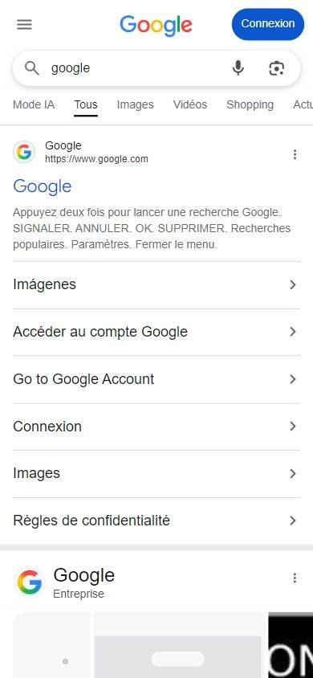

Francia
Cambiar consultaTurismo y reservas
Los seleccionados
Los tres sitios más visitados de Francia, según estadísticas de tráfico.
En resumen: lo que hacen los líderes
Estilo visualInterfaces muy aireadas, con paleta acotada y pocos elementos por pantalla.HeaderHeaders blancos y sobrios con secciones de tareas del viajero y accesos de cuenta a la derecha.Primera pantallaTítulo claro y buscador como protagonista; las promos van debajo, en bloques con esquinas redondeadas.
La pantalla de inicio de cada uno

Foto en camino
Foto en camino
Estilo visual
Colores, imágenes, tipografía y cuánta información muestran.
Recomendación
Tu estilo visual debería…
- Mucho aire y pocos elementos; un solo color de marca.
Lo que tienen en común: Interfaces muy aireadas, con paleta acotada y pocos elementos por pantalla.
La paleta de cada uno
Medida sobre la primera pantalla. Los colores de marca salen del header; el resto muestra cuánto espacio ocupa cada color.
Air France
Colores de marca
79 % de la pantalla en blanco, gris o negroSNCF Connect
Colores de marca
86 % de la pantalla en blanco, gris o negroTripadvisor Francia
Colores de marcaSin color: blanco y negro
68 % de la pantalla en blanco, gris o negroAsí lo resuelve cada uno
Ficha comparativa
| Aspecto | Air France | SNCF Connect | Tripadvisor Francia |
|---|---|---|---|
| Paleta | Acotada: azul marino + blanco | Acotada: azul claro + blanco | Acotada: blanco + verde |
| Imágenes | Foto grande | Ilustraciones y fotos medianas redondeadas | Fotos medianas |
| Densidad | Baja | Baja, mucho aire | Baja |
Header
La franja de arriba con el logo y los accesos.
Recomendación
Tu header debería…
- Secciones nombradas por tareas: comprar, check-in, mis reservas.
Lo que tienen en común: Headers blancos y sobrios con secciones de tareas del viajero y accesos de cuenta a la derecha.
Así lo resuelve cada uno

Ficha comparativa
| Aspecto | Air France | SNCF Connect | Tripadvisor Francia |
|---|---|---|---|
| FondoIgual en todos | Blanco | Blanco | Blanco |
| Logo | Azul, a la izquierda | Azul y verde, a la izquierda | Verde y negro, a la izquierda |
| Secciones | Comprar billete, check-in, mis reservas, Flying Blue, ayuda | Viajar, tarjetas y abonos, servicios | Descubrí, opiniones, viajes |
| A la derecha | Buscar y cuenta (íconos) | Ayuda, mis billetes, conectarse, carrito | Cuenta |
Primera pantalla
Lo primero que se ve debajo del header.
Recomendación
Tu primera pantalla debería…
- Un título que diga qué podés hacer («Trenes, buses y transporte…») y el buscador debajo.
Lo que tienen en común: Título claro y buscador como protagonista; las promos van debajo, en bloques con esquinas redondeadas.
Así lo resuelve cada uno
Ficha comparativa
| Aspecto | Air France | SNCF Connect | Tripadvisor Francia |
|---|---|---|---|
| Formato | Foto a todo el ancho + caja azul + buscador debajo | Título + buscador en píldora + banner con márgenes | Título + buscador en píldora + tarjeta verde |
| Botón | Azul | «Rechercher» con borde | Verde «Buscar» |